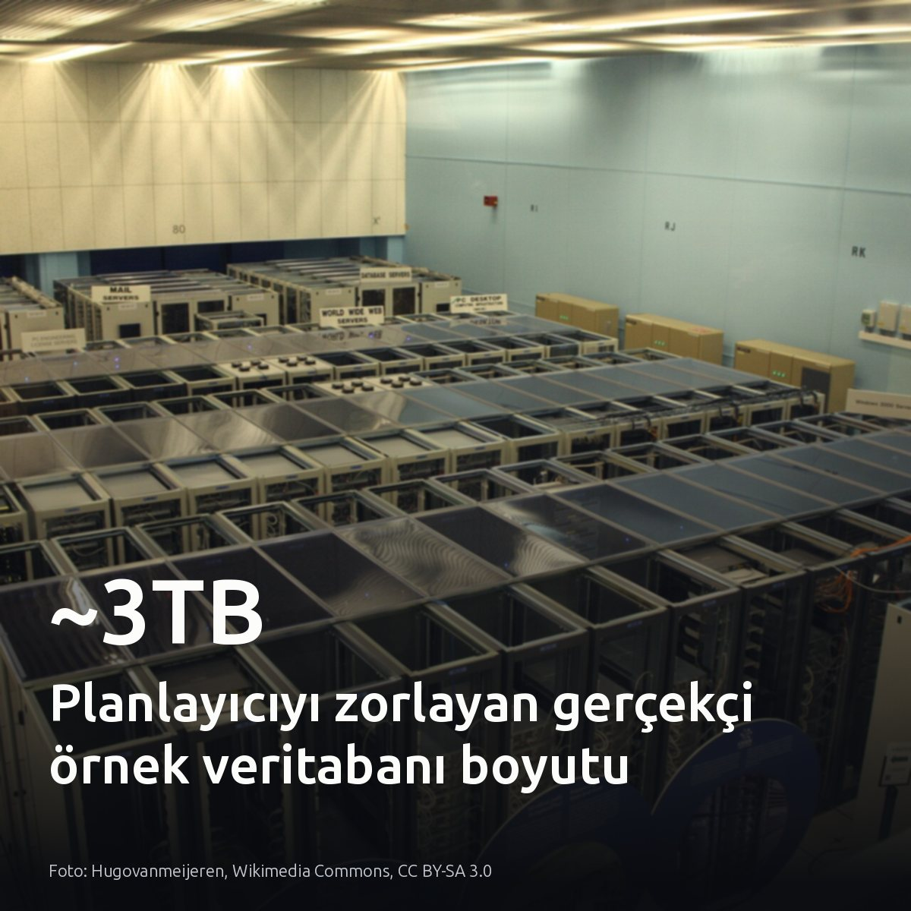
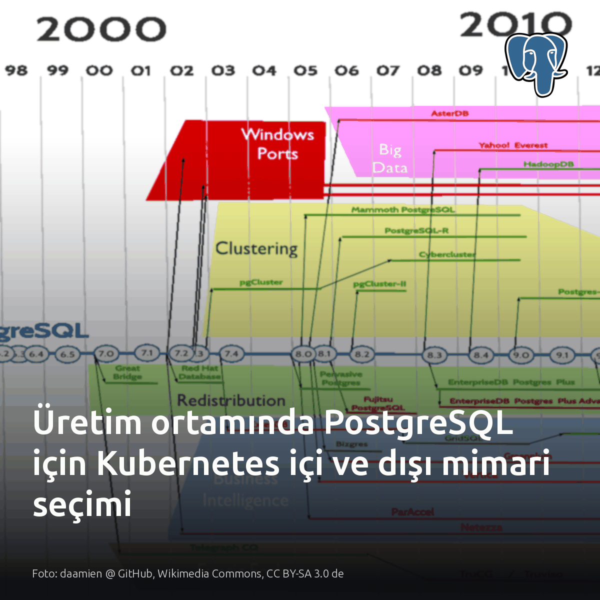
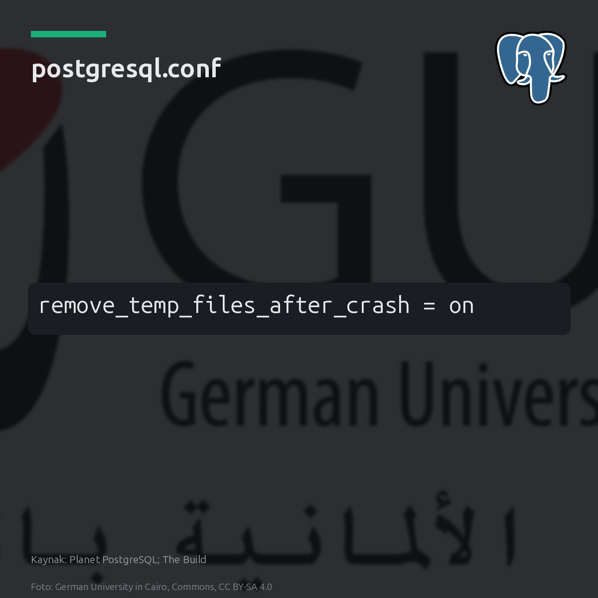
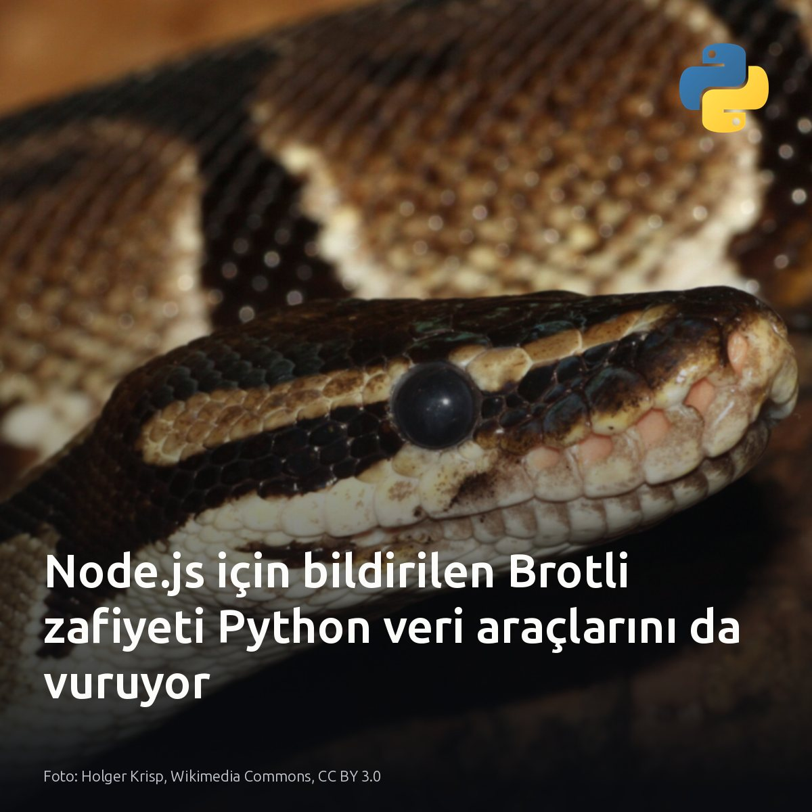
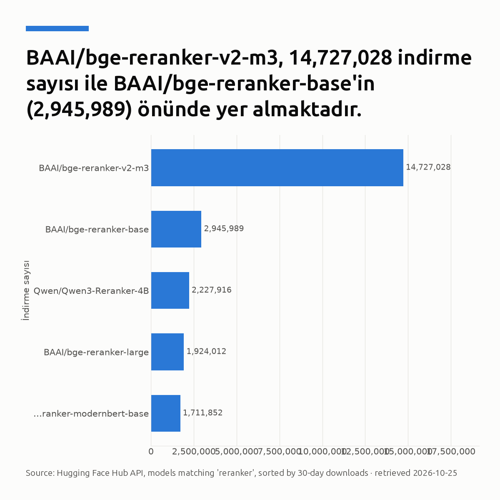

Metni kopyala, kartı indir, LinkedIn'de yapıştır. Bağlantılar gönderiye değil ilk yoruma.

Sorgu planlayıcı testlerinde oyuncak veri devri kapandı: yeni örnek PostgreSQL veritabanı ~3TB boyutuna ulaşıyor. Küçük şablonlar darboğazları gizliyordu. Pagila üzerinde milisaniyede biten sorgular, soğuk önbellekte hatalı hash join ve index kararlarını hemen açık ediyor. Maliyetli yürütme planları artık canlı sistem yerine doğrudan testte yakalanıyor. #postgresql #database #dbaKartı indir
Kaynak ve detaylar: [S1] r/PostgreSQL paylaşımı ve veri seti: https://www.reddit.com/r/PostgreSQL/comments/1xar741/i_built_a_large_realistic_sample_postgresql/

PostgreSQL'i Kubernetes dışına almak, yük devretme kesintisini dakikalardan saniyelere indiriyor. Fark depolama yönetiminde başlıyor. Küme içinde düğüm çöktüğünde diskin ayrılıp yeni pod'a bağlanması dakikalar sürerken, bağımsız mimaride yük devretme saniyeler içinde tamamlanır. Hızlı dağıtım esnekliği için küme içi operatörler yetebilir; ancak sıfırdan küme kurulumunda verinin korunması ve düşük kesinti süresi için veritabanı dışarıda tutulmalı. Düğüm arızasında depolama biriminin yeniden bağlanma gecikmesine bakın. #postgresql #kubernetes #dbaKartı indir
Kaynak ve mimari detaylar: https://medium.com/@kushner.serge/a-database-per-microservice-rds-style-postgresql-outside-kubernetes-keyset-pagination-and-d57479c9291e?source=rss------postgresql-5 Görsel kaynağı: daamien @ GitHub, Wikimedia Commons, CC BY-SA 3.0 de

Çöken bir backend'in bıraktığı 300.000 yetim dosya, bir sonraki arızada diski kilitleyebilir. Büyük hash join veya sıralama işlemlerinde süreç çöktüğünde temizlenmeyen geçici dosyalar, PostgreSQL 14 öncesinde postmaster yeniden başlayana kadar diskte kalıyordu. Tek çare remove_temp_files_after_crash parametresi. Ayar açıkken postmaster, çökme kurtarması başlamadan önce tüm bu kalıntıları 2,6 saniyede temizler. Fakat disk çöküş olmadan, aktif çalışan tek bir sorguyla doluyorsa bu koruma devreye girmez. #postgresql #dba #databaseadministrationKartı indir
İnceleme ve kaynaklar: • Christophe Pettus, 'All Your GUCs in a Row: remove_temp_files_after_crash' (The Build / Planet PostgreSQL): https://postgr.es/p/9zU Görsel: Planet PostgreSQL; The Build (postgresql.conf)

CVE-2026-111497 yalnızca Node.js açığı sanılıyor; oysa 9.2 skorlu zafiyet Python veri hatlarını da vuruyor. Kusur JavaScript motorunda değil. Google Brotli kod çözücüsündeki sınır dışı yazma zafiyeti, 1.0.3 ile 1.2.0 arasındaki tüm sürümleri doğrudan etkiliyor. requests ve httpx bu kütüphaneyi otomatik yükleyip uzaktan kod çalıştırma riski yaratıyor. Konteyner imajlarında Brotli 1.2.1 sürümüne geçilmediği sürece veri boru hatları savunmasız kalıyor. #infosec #python #dataengineeringKartı indir
Kaynaklar ve detaylı analizler: - Görsel: Holger Krisp, Wikimedia Commons, CC BY 3.0 - Aikido Security analizi (CVE-2026-111497 & Python): https://www.aikido.dev/blog/python-packages-vulnerable-node2shell-brotli-cve-2026-111497 - Node.js Güvenlik Bülteni (Ekim 2026): https://nodejs.org/en/blog/vulnerability/october-2026-security-releases

Vektör aramasında en kritik onay kuralı sekizinci sıraya kadar gerileyebiliyor. Biyokodlayıcılar metinleri bağımsız vektörlere indirgediğinde genel çerçeve belgeleri anlamsal uzayda haksız bir üstünlük kazanıyor. Kosinüs benzerliği tek başına yanıltıcıdır. Sorgu ile adayın ayrı gömülmesi, doğrudan sözcüksel şartların ıskalanmasına neden olur. Çapraz kodlayıcılar tam dikkat mekanizmasıyla sorgu ve belgeyi aynı anda işleyerek bu anlamsal kaybı çözer. İlk aşamada çekilen 25 parça, belirleyici detaylara göre yeniden dizilir. Ham sıralamayı doğrudan üretici modele iletmek, asıl kanıtın dikkat penceresinde kaybolmasıyla sonuçlanır. #rag #reranking #crossencoderKartı indir
İncelenen kaynaklar ve model verileri: - Hugging Face Hub API (reranker modelleri 30 günlük indirme verileri) - Reranking in Production RAG (Part 11): https://medium.com/@er.rajkumaar/reranking-in-production-rag-how-to-get-the-most-relevant-context-to-your-llm-6ea84a9ecbe7